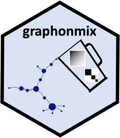

Package index
-
autoplot(<extract_sparse>) - Plots the output of extract_sparse function.
-
create_exp_matrix() - Creates an nxn exponential matrix
-
empirical_graphon() - Computes empirical graphon from graph
-
extract_sparse() - Extracts the sparse part from a (U,W) graphon mixture
-
generate_star_union() - Generates a sparse graph of star graphs
-
graph_join() - Joins two graphs
-
hill_estimator() - Computes the Hill estimator or the power of the degree distribution
-
line_graphon() - Creates a line graphon from a sequence of probabilities
-
plot_graphon() - Plots graphon
-
predict_hubs() - Predicts the degree of hubs of an new graph
-
sample_graphon() - Generates a graph given a graphon
-
sample_mixed_graph() - Generate a (U,W) mixture graph
-
scale_graphon() - Scales a graphon to an nxn matrix